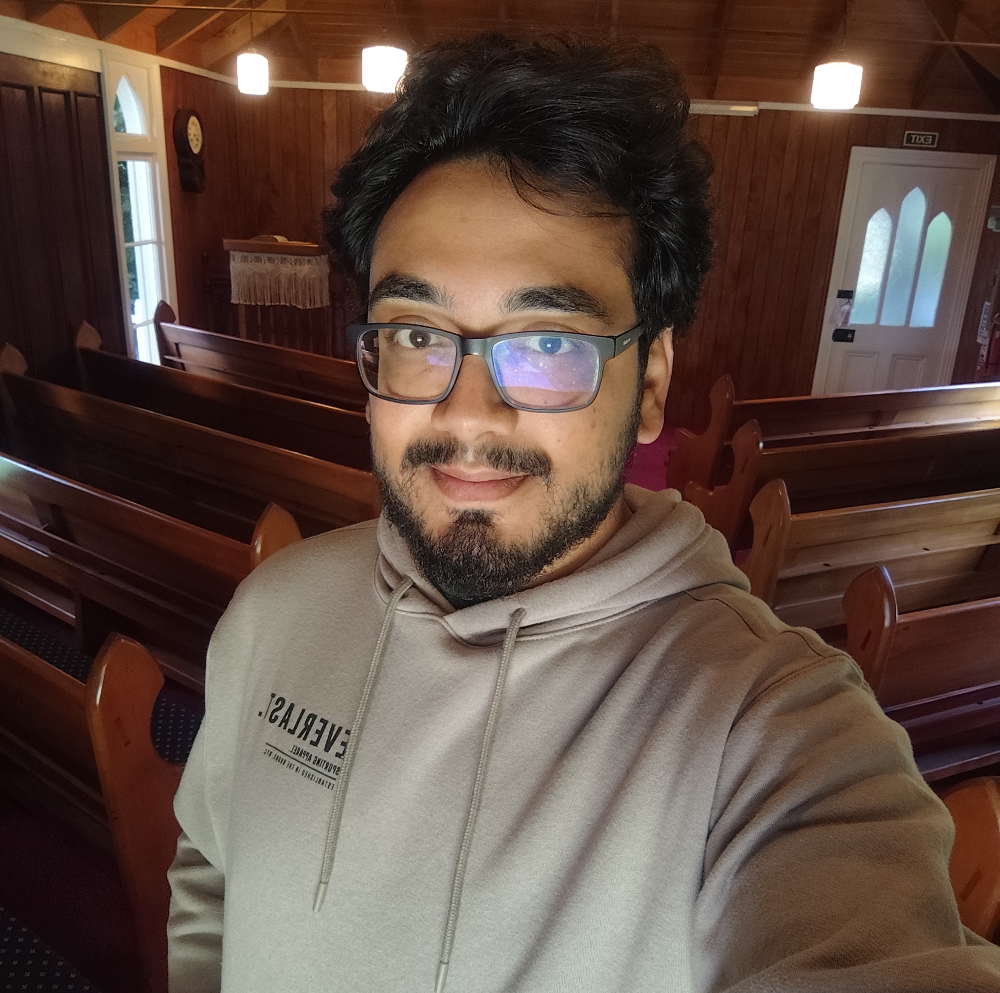

Quem sou
Sou Vinícius, Programador Júnior (Front‑end) na NTT DATA e estudante de Ciência da Computação (UFU). Apaixonado por jogos, storytelling e línguas, reúno mais de 5 anos de experiência com Unity3D (C#) e 9 anos como tradutor técnico (EN↔PT).
Gosto de transformar ideias em experiências interativas que ensinam e emocionam — já atuei na localização do jogo Conectado (parceria com a Universidad Complutense de Madrid) e desenvolvi projetos como Mariana, Pavor e Chat with Yu.
Valorizo atenção aos detalhes, colaboração em equipes multidisciplinares e aprendizado constante; busco oportunidades que unam desenvolvimento, design e tradução para criar produtos claros, acessíveis e culturalmente.
